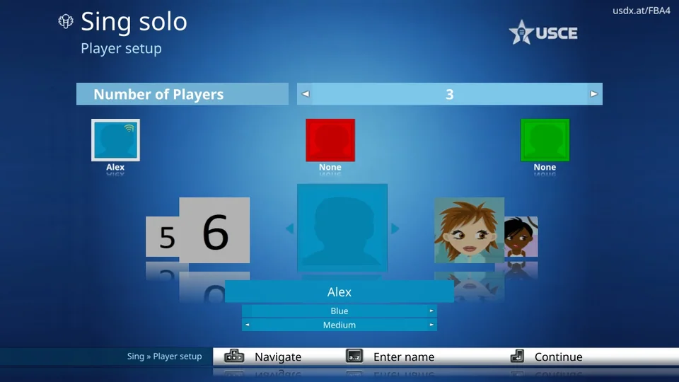
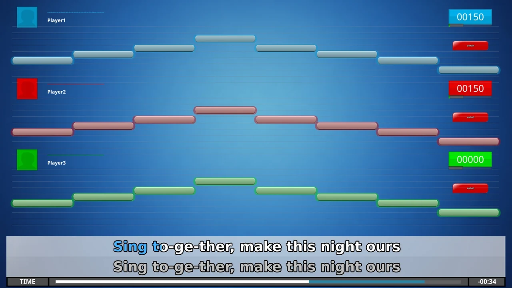
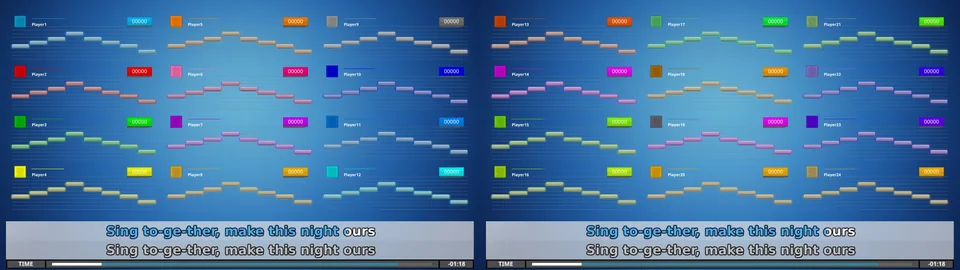
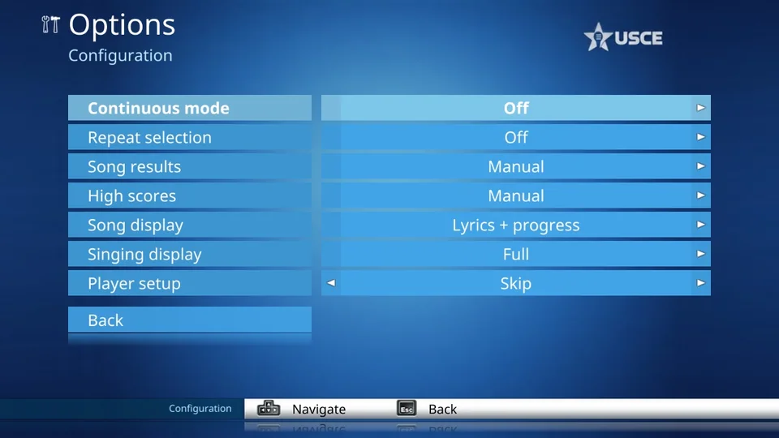
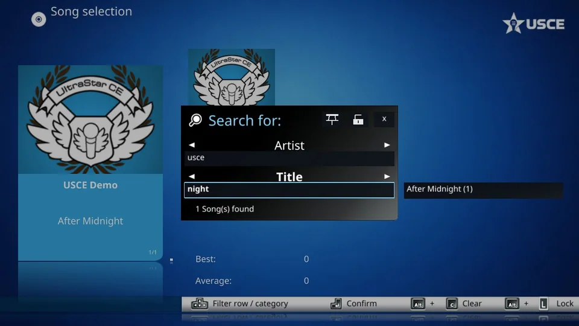

Use your phone as a microphone
Join from your phone’s browser and sing alongside wired or USB microphones. The companion also lets you browse songs and control the game.

Free, open-source karaoke for Windows, macOS and Linux. Follow the lyrics, match the notes and sing solo or with friends.

Join from your phone’s browser and sing alongside wired or USB microphones. The companion also lets you browse songs and control the game.

Share one or two screens. The layout adapts to the group, and players can choose which voice to sing in multipart songs.

Continuous playback carries the group into the next song. Choose when results appear, repeat a playlist, or use lyrics-only mode with zero singers.

Combine filters, see how many songs match each suggestion, and save filter sets. The library updates as you add or remove song files.

With FFmpeg, USCE decodes video on a background thread so the game can keep drawing lyrics, notes, and menus while the next video frames are prepared. Video decoding changes
USCE is a fork of UltraStar Deluxe with more room for community requests and experimental features. We try new ideas earlier and make changes configurable where it makes sense.
Expect occasional breaking changes. If you prefer a more stable experience, we recommend UltraStar Deluxe.
Bring your own UltraStar-format songs. The getting-started guide covers setting up microphones and adding songs.
USCE builds on the work of the UltraStar Deluxe team and contributors, and on the original UltraStar by corvus5. Thanks to everyone who keeps the game, song format and theme community going.